Q0：一页速查——什么时候用 2.1、怎么用、哪里会翻车？
强项：精确文字、编辑保字、视角切换、多参考合成、透明抠图和场景化编辑。高清纯修复优先用 VOSR 2.0；必须 100% 正确的文字交给 QwenTextOverlay。翻车点：局部修小字、参考图含人脸、极端姿势、PE 在海报任务上发明文字。
- 文字类任务：逐字库存 + 有利排版；海报字距用版式条件 + “恰好 N 行”。
- 编辑类任务：整图编辑 + 库存最稳；只动一处用 mask 合成；别做局部小字修复。
- 人物类任务：视角写方位角；多参考用骨架 + 平铺；极端姿势接受多抽 seed，手部特写必须逐根数指。
- PE 使用纪律：它会在海报任务上自己发明文字并画进图（实测三组英文 + 二维码）；文字严格任务改用 Skill+API，或给 PE 输出加“无新增文字”机械校验。
所有结论来自 2026-09-25 本机 50+ 次实测，证据见逐案例日志；未实测项均标“候选/未验证”。
Q1：做一张带很多字的海报，该走哪条路线？
真实场景密集小字海报实测（夕阳市集 + 8 条文字，四路线同 seed）：Skill+API 版面最干净但丢了时间字段；PE 审美最强但拆标题、加图标和二维码；专家版式最清晰。三条路线都在最密的小字行犯了同一个“位→在”错。
- 纯色背景是测试产物不是模型限制——写真实场景和光影词，审美直接到杂志级。
- 密集 footer 小字（宠物友好｜雨天顺延｜停车位有限）是稳定风险点，要逐字抽查。
- 提示词中段的信息（如时间 11:00–21:00）比首尾更容易丢，关键信息往前放或单列。
- 多文字容量不用慌：菜单 8 条、14 条精确字符串都全部逐字正确。
边界：PE 的“扩写”是实际可见污染；中文装饰性字距靠禁令解决不了，要版式条件或后期。
Q2：商品包装上的小字总崩，是模型不行吗？
不是。先分三种情况：模糊但字形还在 → VOSR 2.0 一步超分（实测 `净含量` 从不可辨恢复正确）；字形已不可辨/已是错字 → Qwen 整图重建 + 逐字库存（3/3 seed 救回）；清晰源图短指令即可。
- 2×2 实验证明：降质 + 无库存 → 小字崩坏（3/3 seed 复现）；降质 + 有库存 → 全部救回（3/3 seed）。
- 模型是按文字“重建”，不是可靠 OCR 复制；VOSR 相反——它只修像素，语义错字只会被锐化得更清楚。
- 局部修小字不可靠已坐实：`净含量` 的“含→合”错字在局部编辑里 5/5 次稳定复现，整图重建却从不犯。
- 真实场景实测：生活方式照片里 8 条单行文字全对；但营养成分表这种多栏表格小字右列乱码——单行可靠、表格小字是当前明确边界。
- 重新抽卡也不变好怎么办？别赌生成：画面让模型出、文字用 QwenTextOverlay 插件像素级写（自研节点，1.1 秒修好错字 footer，可先 erase 盖掉旧错字）——footer 小字、营养表、价格列这类必须全对的文字走这条确定性路线。
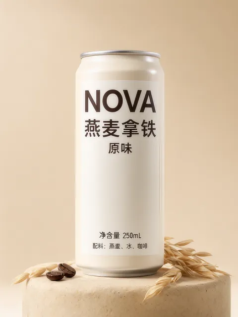
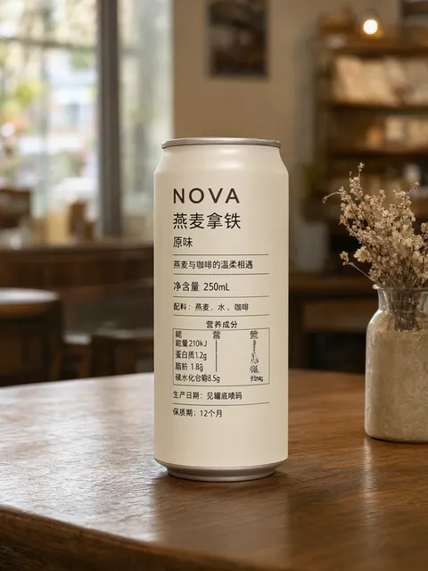
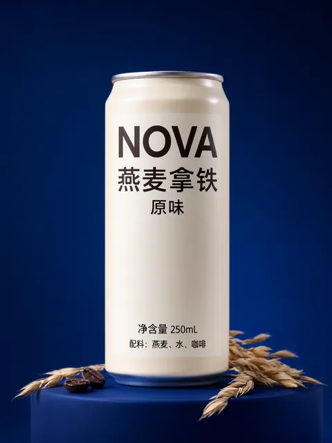
边界：用户给不出准确原文时，不要承诺小字保真——先 OCR 核对，或把文字层留给后期排版。
Q3：手脚崩了怎么修？一定要画 mask 吗？
不用。逐轮缩小范围的整图修复链即可：第一轮修脚、第二轮修双手、第三轮只修提包手，三轮 63 秒收敛。压力实测中双人互动和盘腿动作通过，但微距捏钥匙被回放确认是 6 指，肢体解剖实际为 4/5；真正短板还包括极端姿势服从。
- 同时修四个端点会分散注意力；每轮都要写明“上一轮修好的部位保持不变”。
- 双人空中击掌、盘腿坐无崩坏；但微距捏钥匙其实是 6 根手指（你回放抓到的，我第一轮目检漏了底部第六指）——手部特写要放大到指甲级逐根数。
- 但“鹰式缠绕双臂”这种极端姿势，普通和结构化提示词两版都被改写成简单合掌——模型会用安全姿势逃避，结构化写法不总能逼出来。
- 手捏细包带是最难交互，要描述“拇指四指相对、包带连续穿过抓握”。
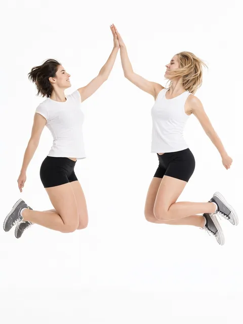
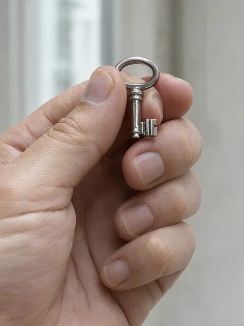
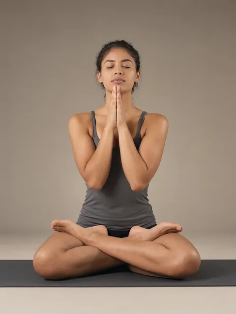
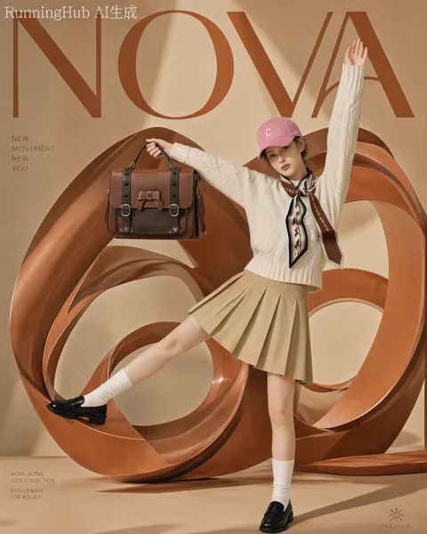
边界：多次编辑人工成本高，脸部每轮有轻微重绘，不是“一键完美修复”；极端姿势服从需多抽 seed。
Q4：同一个人物，能换成侧面、背面视角吗？
能。关键是写明方位角 + 可见性锚点 + “这是新构图，不复制原机位和姿势”；只说“换个角度”会被原图锚定。
- 明确“严格 90° 右侧面”→ 标准侧面成功；模糊“换角度”→ 回到正面（同 seed 对照）。
- 角度词表：正面 0°、三分之二 45°、侧面 90°、后三分之二 135°、背面 180°。
- 真实场景同样成立：黄昏老街霓虹光斑里的 90° 侧面一次成功，服装全保留——审美不受影棚限制。
边界：身份是否“像本人”需要你回放确认；不同人物、多 seed 复验仍是候选/未验证。
Q5：三张参考图（人、姿势、衣服）能各司其职吗？
能，最稳组合是：图2 用 DWPose 骨架 + 图3 用无人像平铺图。两个串扰向量分别是“姿势图里的人”和“服装图里的人”，都要消掉。
- 图3 用人穿服装的全身照：脸和发型必串（强化文字禁令也压不住）。
- 图3 换平铺图后 2/3 个 seed 全成功；失败的 seed 里身份改从图2 照片的男性来。
- 图2 再换骨架后身份救回、姿势服装全对——但粉色帽子丢了（骨架不含帽饰信息）。身份保真不能承诺 100%，关键图多抽几个 seed。
- 官方 PE 自动写的多参考提示词整图复制了姿势照片的人，职责全面崩溃。
- 同一条纪律放大到 6 张参考图也一次成功：身份/骨架/服装/手提包/咖啡馆背景/线稿风格各司其职——每张图只放它负责的东西。
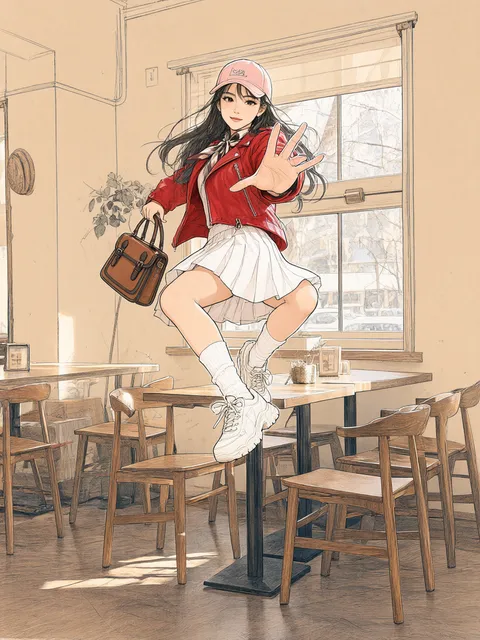
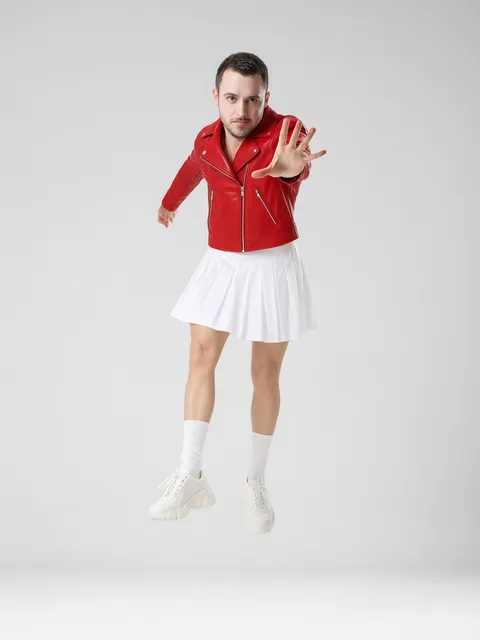
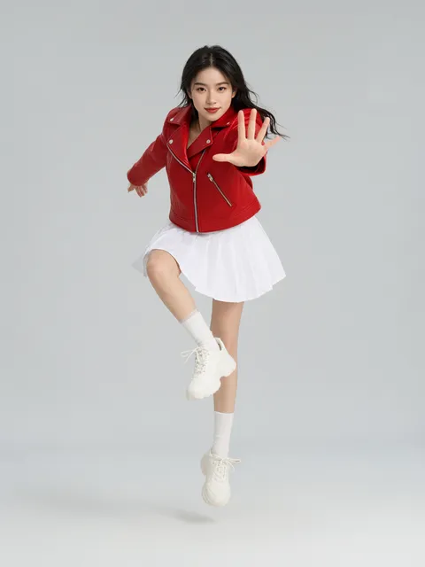
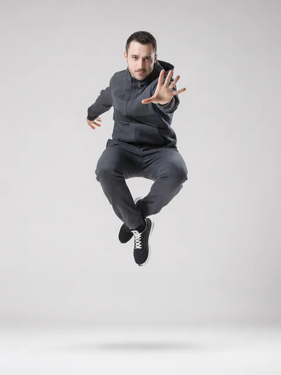
边界：6 图为单 seed；复杂多层服装、必须用人穿图的场景、7 图以上仍是候选/未验证。
Q6：只想改图里的一小块，圈选、涂抹、mask 有区别吗？
有。圈选/涂抹是软提示（模型会越区顺带改别处）；mask 合成才是硬约束（mask 外像素级不变），但 mask 画漏了就残留。
- 修手：三种都成功；圈选/涂抹顺带把坏脚也修了（可能是福利，也可能是事故）。
- 换色：圈选/涂抹满分；mask 因椭圆漏罩袖口，残留了红袖口。
- 小字：三种都残留同一错字——精确小字别靠局部编辑，走整图重建或后期。
边界（同 seed 对照实测）：标记类编辑默认不写“XXX 保持不变”——保留项里的期望状态会被当成目标执行；只有“已存在且绝不能动”的内容才写，且用“现有的/已是”措辞。mask 的绘制精度就是结果精度。
Q7：高清放大/模糊修复用什么？
默认 VOSR 2.0 一步超分：保真更高、快 10 倍、显存不到一半、不用写提示词。只有“边修边改”或“字形已不可辨要按库存重建”时才用 Qwen 增强。
- 同素材对照（SSIM vs 原图）：真人 VOSR 0.932 vs Qwen 0.845–0.883；插画 VOSR 0.898 vs Qwen 0.658–0.736。
- VOSR 2.2–2.5 秒、峰值 6.7GB；Qwen 增强 24–33 秒、15.4GB 以上，且有轻微重绘感。
- Detail Enhancer LoRA：真人脸部略优、插画反而更偏输入——非必装。
- VOSR 边界：语义错字修不了（只会锐化错误）；>512px 输出要开 tiling。
Q8：能直接出透明底素材（贴纸、抠图）吗？
能。用 Skill 的 RGBA 固定包装（首尾两句逐字固定），七个入口全部实测成功：文生图素材、照片全身抠图、发丝级近景、资产再编辑、复杂遮挡、多人合影、动态模糊。
- 复杂遮挡：只提取真实可见部分，不会编造被挡住的肢体。
- 多人合影：三人勾肩完整提取，头臂间空隙正确透明。
- 动态模糊：模糊四肢以半透明软边保留（软边像素是清晰案例的 10 倍以上）。
- 输出必须机械检查 alpha 通道才算数；查看器里透明区的彩色噪点是正常现象，合成时不可见。
边界：极端密集人群、透明/反光材质主体未测，标候选/未验证。
Q9：Skill、官方 PE、手写提示词，日常到底用哪个？
文字类任务用 Skill+API（质量与 PE 打平、快 3–4 倍）；多参考图职责任务手写结构化提示词；PE 留给追求视觉策划上限的场景。
- 精确包装：PE 57.8s vs Skill 19.2s，文字都全对。
- 单图编辑：PE 87.7s vs Skill 20.1s，质量打平。
- 多参考图：PE 崩溃、Skill 半成功、手写最可靠。
- 成本：Skill 有 API key 配置与未知费用（接口不返回，不能说免费）；PE 本地免费但每提示词 42–92 秒。
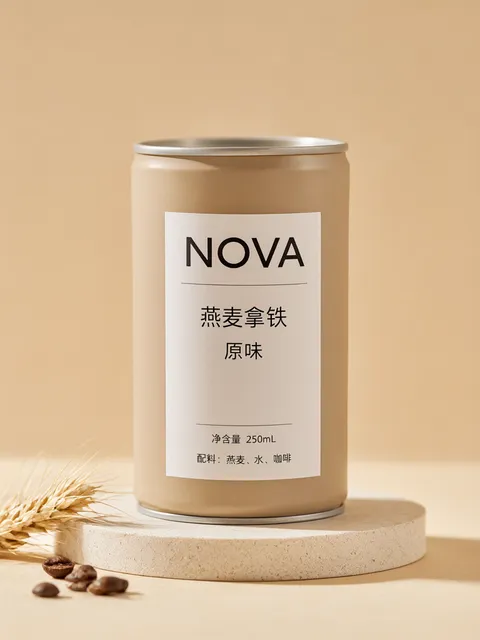
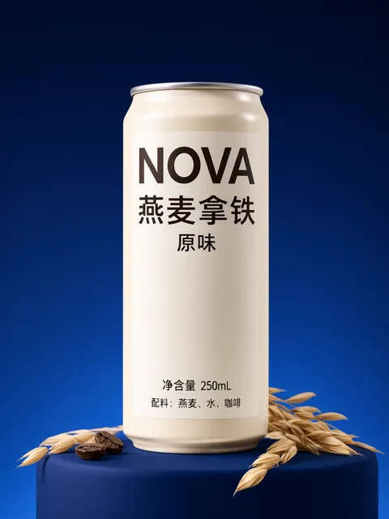
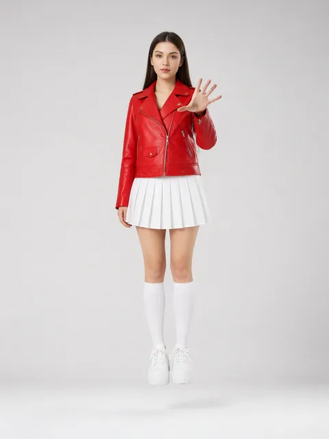
Q10：那些加速 LoRA、Fix LoRA 能用吗？含未验证项
实测四款：Wuli 4-step Turbo 崩坏不可用；8-step Lightning 文生图/编辑都可用；Edit-2511 4-step 只在编辑任务可用（T2I 崩坏）；Fix LoRA 已下载实测，无增益无损害。
- Wuli 4-step Turbo：同 prompt 同 seed 下从“完美”变“过曝 + 文字散架”——“4 步不行”仅限这一款。
- 8-step Lightning：T2I 与 I2I 都 5/5 文字全对，耗时约为 30 步的 60–65%。
- Edit-2511 4-step：编辑任务 3/3 通过（含高难修手，5.7–8.9 秒）；但同一个 LoRA 拿去做文生图立刻崩——它是编辑专用，不是通用加速。
- Qwen-Image-2.1-Fix：针对“发白/细节崩坏”的社区修复 LoRA；本机栈本来就没这个问题，作者设置与我方设置下都无差别——可选配件，非必需。
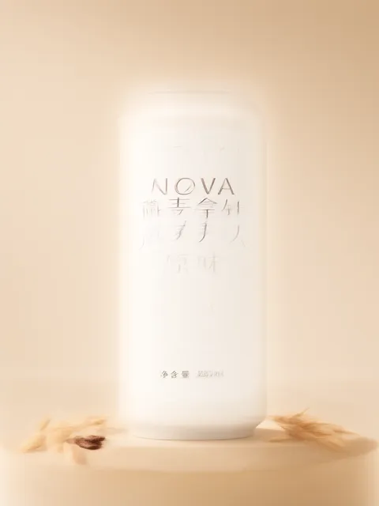

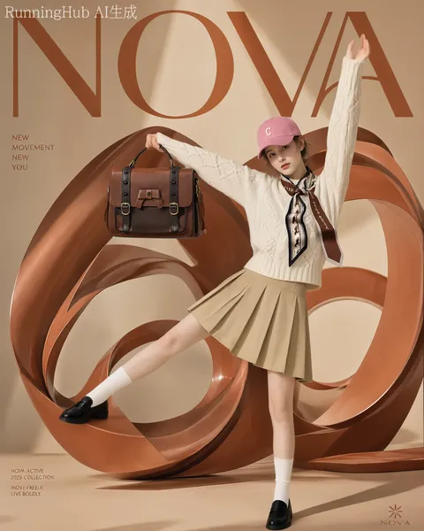
Q11：测试结果有没有变成真正能用的 ComfyUI 工具？
有，但要区分“模型能力”和“工程工具”。本轮把最难保证的文字与人工定位拆了出来，形成 qwen_text_overlay 工具套件：生成模型负责画面，文字层负责必须 100% 正确的内容。
- QwenImageAnnotator：在节点内直接画矩形、画笔、箭头、文字和擦除区域，并输出 mask 与区域 JSON。
- QwenImageCropRatio：支持 16:9、9:16、1:1、4:3、3:4 等比例和宫格裁剪。
- QwenRegionToBox：自动读取区域坐标和背景中位色；QwenTextOverlay：像素级擦除旧字并重写新字。
- 后续还加入大标题、Markdown 面板、分组开关、mask 分析和 2D 骨架编辑器；129% 缩放下的坐标错位也已经修复。
这些节点已完成本机 API 与浏览器交互测试，但 RunningHub 对自定义前端面板的在线回放仍未验证；不能把本地通过写成 RH 已通过。
Q12：最后应该怎样选路线？
画面生成用 Qwen，纯高清修复用 VOSR，严格文字用文字层，复杂多参考用骨架和平铺，PE 只在愿意接受主动创意扩写时使用。
- 想要审美和创意：官方 PE thinking=true，但要人工检查它新增的文字、图标和二维码。
- 想要文字与编辑稳定：Skill+API 或手写结构化提示词；多参考职责不要完全交给 PE。
- 想要效率：8-step Lightning 可作为候选加速；Edit-2511 4-step 只用于 I2I 编辑，不能拿去做 T2I。
- 想要可交付：生成、局部修复、文字层、alpha 检查分开做，别让一个模型同时承担所有确定性工作。
最终状态：producer-validated，待用户回放与 Hermes 独立复核，尚未标记为 accepted。
Q13：KimiCode 的文字插件为什么还要再接一次 2.1 编辑？
因为插件当前做的是确定性文字层：它能把文字准确写上去，但为了遮住原错字，会留下一个纯色矩形。最佳组合变成“插件负责逐字正确，2.1 负责把矩形融回场景”。
- 02A 原生 2.1 / 30 步：24.329 秒，色块消失，草地纹理、阴影和光照连续，底部文字完整可读。
- 02B 2.1 + Edit-2511 Lightning / 4 步：6.641 秒，视觉结果同样可用，约快 3.66 倍。
- 02C 再编辑一轮：17.953 秒，仍未出现明显色块、硬边、重复字或乱码；但这只是单素材单 seed，不代表所有图片都稳定。
- 交付建议：先用插件锁定必须逐字正确的文字，再用局部编辑融合背景；每次编辑后检查文字和局部边界。


证据等级：本机 GPU 实测 + 目视检查；插件在 RunningHub 自定义前端的在线回放仍未验证。
Q14：2511 Lightning LoRA 真的能放到 2.1 编辑里吗？
可以作为实验性跨版本加速组合使用：本轮同一 Qwen 2.1 基座、同一输入、同一 seed 下，4 步 Edit-2511 结果可用；既有 SPEED-02A/B/D 也支持编辑场景可用。但它不是官方兼容保证，不能拿去做 2.1 文生图。
- 推荐参数：Qwen Image 2.1 base + `Qwen-Image-Edit-2511-Lightning-4steps-V1.0-bf16`，4 steps，CFG 1，Euler，simple，denoise 1。
- 已知边界：同一 LoRA 在跨域 T2I 探针中崩坏，因此只路由到 I2I 编辑。
- 回放工作流：
E:\Hermes\05_工作流\01_ComfyUI工作流\Qwen_Image_2.1_图像编辑_Edit2511-4步加速_测试版.json。
工作流是“2.1 基座 + 2511 编辑 LoRA”的实验版，已通过 JSON 节点/link 机械检查；先用海报、局部改字等低风险素材回放，再扩大到人物和多参考。
Q15：2.1 专用 Fun-Controlnet-Union 到底解决什么？
它不是只强化 OpenPose，而是把八种结构控制统一在一个 2.1 控制分支：Pose、Depth、Canny、Grayscale、HED、Lineart、MLSD、Scribble，并能与 inpainting 共用控制分支。对人物资产图，Pose 更适合锁骨架；对视角和空间关系，Depth；对产品轮廓和构图，Canny/Lineart；对草图构想，Scribble；对局部重绘，则是 mask + 控制图联合。
- 它与“直接在提示词里说 OpenPose”不是一回事：提示词是语义约束，Union 是更硬的空间结构约束，适合需要重复姿态、轮廓或空间关系的任务。
- 官方模型卡称控制图应使用目标画布，样本尺寸保持 16 的倍数；它没有把“必须与原图像素尺寸完全相同”写成硬性规则。
- 官方核心仍未合入 2.1 Union，但 T8 社区节点已内置兼容实现；本机使用 T8 转换权重完成了 Pose、Canny、参考图编辑和尺寸对照。
- 本机结果：Pose 54.203 秒、Canny 42.313 秒、参考图编辑 81.125 秒；同宽高比下 1472×1152 与 1152×896 都成功。
- 不同宽高比的 512×768 控制图也能运行，但输出变为 832×1248，结构会随比例变化。因此正确规则是“保持目标画布宽高比，避免拉伸”，不是“必须像素级完全同尺寸”。
官方参考：Qwen-Image-2.1-Fun-Controlnet-Union 模型卡；社区适配：T8 Union 节点。当前结论是“官方核心未合入，T8 社区适配已本机 GPU 通过，仍需用户回放”。


Q17：T8 适配节点应该怎么用？
ComfyUI 不必先升级；安装 T8 自定义节点，并使用它要求的 ComfyUI 转换版 Union 权重。
- 关键节点：
QwenImage21UnionLoader、QwenImage21UnionApply、QwenImage21UnionReferenceEncode、QwenImage21UnionLatentFromImage。 - 参考图编辑时，Reference Encode 的
positive、negative、latent必须一起接入 KSampler；不能再接一个比例不同的空 latent。 - 控制图必须是已经预处理好的 Pose、Canny、Depth 等图；模式下拉框只标识类型，不会自动把普通照片变成控制图。
- 本机已整理 Pose、Canny、参考图编辑三个 UI 工作流，可直接在 ComfyUI 打开；它们属于 T8 社区适配路线，不是官方核心工作流。
本轮证据：本机 RTX 4070 Ti SUPER GPU 实测；RunningHub 在线回放尚未验证。
Q16：这三天的全量结论，能不能一句话讲清？
Qwen Image 2.1 的上限很高，但它不是“输入一句话就全自动交付”的模型：画面交给 2.1，提示词用 Skill 或 PE 辅助，严格文字交给文字层，纯修复交给 VOSR，结构复现再考虑 T8 Union 的 Pose / Depth / Canny 控制。
- 强项：自然语言编辑、参考图创作、文字重建、视角切换、透明图和场景化资产生成。
- 高风险：极端手脚姿势、密集小字表格、模糊源图无文字库存、人物参考角度单一、PE 主动扩写海报。
- 最实用的生产链：素材准备 → 结构化提示词/PE → 2.1 生成或编辑 → 文字层校正 → VOSR 或 Detail LoRA → 人工验收。
- 状态：本页是 producer-validated 全轮汇总；GPU 证据已完成的项可用于视频讲解，RunningHub 前端回放和 Hermes Skill v0.2 独立复核仍需单独标注。